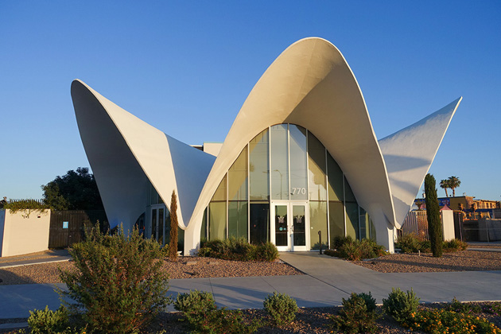
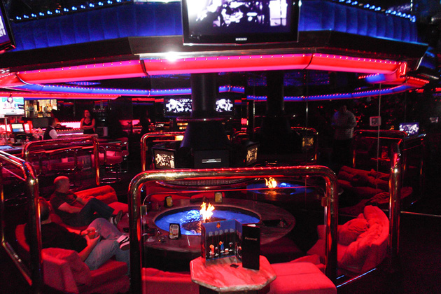
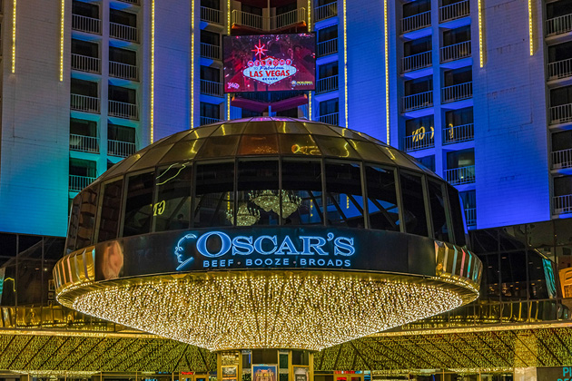
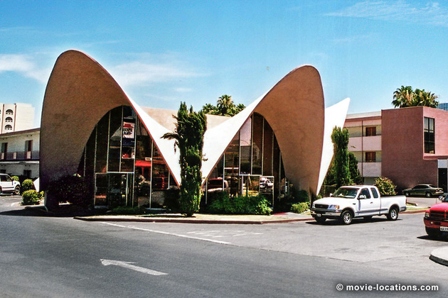

Casino
Main Content

Based on Nicholas Pileggi’s non-fiction account of the fall of the old-school mob control of Las Vegas casinos in the 1970s and the takeover by faceless corporations, Martin Scorsese’s epic suffered a little by coming hard on the heels of the peerless Goodfellas with a similar style and some of the same cast members.
The centre of the real story was the Stardust Hotel & Casino (which was still thriving in 1995 when the film was made). To avoid legal complications it was fictionalised as the ‘Tangiers’ – though frequent bursts of Hoagy Carmichael’s Stardust on the soundtrack provide a cheeky clue.
Vegas has a breathtakingly fast turnover and the Stardust (the place at which I stayed on my first visit to the city in 1987) closed for good in 2006, and was imploded in 2007.
For the most part, the Riviera Casino, which stood at 2901 Las Vegas Boulevard South, stands in for the 'Tangiers'.
It wasn’t possible to close down the Riviera, so the production had to cope with filming through the night for six weeks, while the ceaseless activity of the Vegas punters was at its quietest.
The crew was given access to the hotel's penthouse, restaurants, kitchen, casino, ballroom, La Cage Showroom and also the holy-of-holies – the Counting Room.
The Riviera had opened in 1955 as the first of the high-rise complexes that went on to dominate the Strip – before that, Strip resorts were still pretty much traditional roadside motor courts. In 2015, the Riviera closed its doors and in its turn was finally demolished in 2016.
The Riviera was extremely film-friendly, seen also in the original 1960 Ocean's 11, Bond movie Diamonds Are Forever, Austin Powers: International Man Of Mystery, Doug Liman’s Go, The Hangover and 21 among many other productions.
The Tangiers’ glittering entrance was that of the Landmark Hotel, Convention Center Drive and Paradise Road, which was instantly recognisable by its 31-floor tower, inspired by Seattle’s Space Needle. The frontage was extended – and the 70s Strip recreated – digitally.
And, yes, the Landmark too was demolished shortly after the filming of Casino. Its spectacular demise was filmed for Tim Burton’s Mars Attacks!, where it becomes the ‘Galaxy’, brought down by those pesky little aliens.
Not every trace of the ‘Tangier’ has disappeared, yet. The Jubilee! Theatre of Bally's Las Vegas, 3645 Las Vegas Boulevard South, was used for the ‘weighing in’ of the showgirls from Paris’s Femme Fatale review, as well as the Aces High TV show. That’s also Bally’s penthouse, seen as the Senator (Dick Smothers) enjoys the Tangiers’ complementary perks.
Bankrolled by the Chicago mob, the 'Tangiers' is put into the charge of ‘Ace’ Rothstein (Robert De Niro), a methodical and meticulous gambler, based on the real ‘Lefty’ Rosenthal, with a keen eye for spotting weaknesses and scams. But when his childhood friend Nicky Santoro (Joe Pesci) is installed to add ruthless muscle to his expertise, the seeds of tragedy are planted.
The story is told in flashback from the moment there’s an explosive attempt on Ace’s life. In reality, the bombing of Rosenthal’s car took place in front of the old Tony Roma's restaurant at 620 East Sahara Avenue (which has been a Hustler Hollywood lingerie store since 2016). The film uses the southwest entrance of Main Street Station, 200 North Main Street, Downtown Las Vegas, as a stand-in, with the California Hotel and Casino in the background. No, it’s not a railway station, it’s another themed casino and hotel.
As Ace’s voiceover spells out the intricate details of skimming money from the Casino’s Count Room, the cash is being whisked back to the mob bosses via ‘Kansas City’.
Since the film stays almost entirely in Nevada, Henderson Executive Airport, 3500 Executive Terminal Drive, Henderson, just to the south of Vegas, stands in for ‘Kansas City Airport’. It's now used as a 'relief airport' for McCarran International.
Likewise, ‘San Marino Italian Grocery’, the innocuous ‘Kansas City’ produce market where the money is handed over, is EXPawn, 3010 South Valley View Boulevard, at Meade Avenue, a few blocks west of the Strip. The premises has been slightly remodelled since appearing in the film.
When the casino’s squeaky-clean front man Philip Green (Kevin Pollak) is introduced, there the brief glimpse of an enticing-looking motel swimming pool graced with below-the-waterline circular windows.
Don’t get excited – it was real but, again, it’s gone. It was the aptly-named Glass Pool Inn, which stood at 4613 South Las Vegas Boulevard.
The city's main air terminal, Las Vegas McCarran International Airport, 5757 Wayne Newton Boulevard, appears as itself throughout the film, though it now looks a little different since getting a major makeover in 2018.
Things start to get complicated once Ace falls headlong for Ginger (Sharon Stone), a tough Vegas cookie who doesn’t return the same passion but is nevertheless happy to enter into an ‘understanding’.

The practical parameters of their relationship are set out as they sit by the firepit at the heart of the Fireside Lounge in Peppermill Restaurant, 2985 South Las Vegas Boulevard. Ace gives her a little money to go powder her nose, and Ginger takes it.
She also hesitantly concedes to Ace’s businesslike marriage proposal and the two move into a huge bungalow full of Bulgari bling and chinchilla, at 3515 Cochise Lane, a couple of miles east of the Strip and, oddly, right in the heart of the Las Vegas National Golf Course.
Unfortunately, this is where Nicky happens to be playing when the feds' plane, which is keeping him under surveillance, runs out of fuel and is forced to land on the course. A slight embarrassment to Ace who happens to be in the back garden pleading his case to the gambling commission.
Despite the technicality of not having a gaming licence, Ace’s expertise turns around the casino’s fortunes and he finds his success rewarded with a Certificate of Appreciation.
‘Vegas Valley Country Club’, where Phil Green presents him with the award, is the Hartland Mansion, 1044 South 6th Street at Park Paseo. And, yes, it does have that great big indoor pool.
If you've been on a winning streak and you’re in the mood, the Hartland Mansion hosts parties, corporate events and, of course, weddings.
Enforcer Nicky, when he’s not reducing people to a bloody pulp, has his human side. He watches his young son play Little League at school, Our Lady of Las Vegas Catholic School, 3046 Alta Drive, but things don't go so well when Nicky finds himself entered into the notorious ‘Black Book’ and barred from every casino in the city.
In order to meet with him, Ace needs to travel out to the Idle Spurs, 1650 East Quartz Avenue, Sandy Valley, which in the film claims to be ’60 miles to Vegas’, though it’s really about 40 miles southwest of Vegas, almost at the border with California.
Despite the setback, Nicky is unstoppable and, with his crew, is soon using his insider knowledge to carry out robberies on hotels and shops.
He’s so successful, he opens up his own jewellery store, ‘Gold Rush’, which was 1201 South Las Vegas Boulevard, a tiny strip mall on Park Paseo. The premises has since been redeveloped into Ocha Thai-Chinese restaurant.
Nicky also moves into the legitimate restaurant business, opening ‘The Leaning Tower’, which he entrusts to his younger brother Dominick.
The restaurant seen in the film is Piero’s Restaurant, 355 Convention Center Drive, off Paradise Road, close to the Las Vegas Convention Center.
Although Nicky dutifully continues to pay off the bosses, it’s not necessarily the full amount they might expect.
‘All American Gas’, the ‘Chicago’ truck stop café used by Nicky as the drop for the boss’s share, stood on the western corner of Fremont Street at South 10th Street. It’s been totally revamped and absorbed into the famous Atomic Liquors, 917 Fremont Street, alongside.
And the Atomic itself is where it all goes a bit Goodfellas as Nicky uses a fountain pen to demonstrate his no-nonsense attitude to anyone who disrespects Ace, before giving the victim a good kicking.
The oldest (free-standing) bar in Las Vegas, Atomic Liquors opened in 1952, when it was a popular spot from which to watch nuclear blasts from the nearby Atomic Test Site. It's also featured in Todd Phillips’ 2009 The Hangover.
Although Ginger is canny enough to keep her share of the spoils in the ‘Vegas Valley Savings & Loan’, Nicky spies on her as she’s drawing out a bit of petty cash for her no-good, on-off boyfriend Lester Diamond (James Woods) and dutifully reports back to Ace.
The ‘bank’ is actually the Blum Medical Marijuana Dispensary, 1130 East Desert Inn Road, off Maryland Parkway just south of the Las Vegas Country Club.
It’s not easy to pull the wool over Ace’s eyes and he’s soon on the case, confronting Ginger and Lester in the Salvadoreno Restaurant, 720 North Main Street, before making Ginger watch as his goons beat up Lester in the carpark of the Regency Motel, alongside the eaterie at 700 North Main Street.
Nicky’s crazily reckless tactics were bound to attract the scrutiny of the law and he soon finds himself being questioned over every crime in the Vegas area. He angrily fends off the press as he exits the Foley Federal Building and Courthouse, 300 Las Vegas Boulevard South.
This is the beginning of the end. Everything starts to fall apart once an FBI bug in the Piscano grocery picks up far more about the shenanigans in Vegas than the forces of law and order could ever have expected.
Ace is denied his gambling licence but, rather than sensibly lying low and running the business behind an innocuous job title, he fights back by choosing to launch his own TV show – ‘Aces High’. This is not the way mob bosses work.
They’re quick to send a warning. Andy Stone (Alan King) passes on the politely worded but unmistakably ominous threat to Ace as they sit parked in the lot of Mighty Mart – now Bells Market, 515 East Oakey Boulevard, north of the Strip.
The stubborn Ace is not about to back down and counters by claiming that it’s Nicky who should take some time off.
This suggestion inevitably gets back to his old friend and the two have a tense meeting in the middle of the featureless Jean Dry Lake Bed, east of I-15, several miles south of Las Vegas.
As the friendship of Ace and Nicky reaches breaking point, Ace and Ginger's marriage also falls apart, with just about everybody making the worst decisions they possibly could.
Ginger leaves for LA and Lester, but is eventually obliged to return. A reconciliation dinner goes horribly wrong as the fastidious Ace insists on cataloguing every penny she spent with Lester.

They’re in the striking glass ‘goldfish bowl’ of Oscar's Steakhouse, part of the Plaza Hotel & Casino, 1 South Main Street, with its wonderful view down Fremont Street (now the flashy Fremont Street Experience). Believe it or not, before the glass roof was added, this raised structure was once the hotel's swimming pool.
The ‘Oscar’ in the restaurant’s name is Oscar Goodman, who was the attorney for the real-life characters, and has a cameo in the film as the lawyer handling Ace and Ginger’s divorce proceedings.

As bad decisions go, the worst comes when Ginger turns to Nicky for a shoulder to cry on, and the two begin an affair of their own.
The crazy, wavy-roofed motel, where they enjoy a brief fling, was La Concha, which stood at 2955 Las Vegas Boulevard South. Although it's now gone, that wonderful lobby has been preserved and moved to become the Visitor Center of Las Vegas Neon Museum, 770 North Las Vegas Boulevard.
Increasingly drunk and erratic, Ginger withdraws her money and jewellery from the Valley bank but is soon pulled over and arrested by cops on South 3rd Street near East Utah Avenue. Again, much has been redeveloped, but you can recognise the Star Motel which still stands in the background.
Evidence is mounting up and as the arrests begin, the mob decides to rub out any loose ends. Nothing personal, it’s just business.
Even the loyal and efficient Andy Stone is callously gunned down in front of, since closed, Ruth’s Chris Steak House, which stood at 3900 Paradise Road.
The film remains within the environs of Vegas. Even the exotic-looking ‘Costa Rica’ hideaway, to which John Nance is tracked down and executed, is a luxurious three-bedroom home tucked away behind gates at 5795 South Lamb Boulevard, in the Paradise area to the south of the city.
There’s a moment close to pathos for Nicky as he’s forced to watch his kid brother Dominick beaten to death before he goes on to meet the same fate. The seemingly endless ‘Indiana’ cornfield was created from scratch at the Rocking K Arena, 6500 Rio Vista Street, northwest of Vegas.
Ginger herself succumbs to a ‘hot’ OD in the corridor of a rundown ‘Los Angeles’ motel. This was the Cabana Suites of the El Cortez Hotel, 651 East Ogden Avenue at North 7th Street, Las Vegas. The hotel was a little seedy perhaps in the Nineties, but it’s since been given a very smart designer makeover.
Ace, one of the few survivors, retires to his home in ‘San Diego’. In fact, this is one of the houses which stood on the old Desert Inn property, which has since been redeveloped to become the Wynn Las Vegas, 3131 South Las Vegas Boulevard at East Desert Inn Road.
The film ends with a non-too flattering montage of the new Vegas and its themed casinos, including:
The giant lion of the MGM Grand, 3799 South Las Vegas Boulevard.
The pirate ships of Treasure Island, 3300 South Las Vegas Boulevard.
The fairy tale castle of Excalibur, 3850 South Las Vegas Boulevard.
The volcano of El Mirage, 3400 South Las Vegas Boulevard.
And the sphinx and pyramid of Luxor, 3900 South Las Vegas Boulevard.
How long will this incarnation survive? It's Las Vegas. Who knows?
Visit Info
Visit The Film Locations
Nevada
Visit: Nevada
Visit: Las Vegas
Flights: Las Vegas McCarran International Airport, 5757 Wayne Newton Boulevard, Las Vegas, NV 89119 (tel: 702.261.5211)
Visit: Bally's Las Vegas, 3645 Las Vegas Boulevard South, Las Vegas, NV 89109 (tel: 702.967.4111)
Visit: Main Street Station Casino Brewery Hotel, 200 North Main Street, Las Vegas, NV 89101 (tel: 702.387.1896)
Visit: the Peppermill Restaurant, 2985 South Las Vegas Boulevard, Las Vegas, NV 89109 (tel: 702.735.7635)
Visit: Piero’s Restaurant, 355 Convention Center Drive, Las Vegas, NV 89109 (tel: 702.369.2305)
Visit: the Las Vegas Neon Museum, 770 North Las Vegas Boulevard, Las Vegas, NV 89101 (tel: 702.387.6366)
Visit: Atomic Liquors, 917 Fremont Street, Las Vegas, NV 89101 (tel: 702.982.3000)
Visit: Oscar's Steakhouse, part of the Plaza Hotel & Casino
Visit: the Plaza Hotel & Casino, 1 South Main Street, Las Vegas, NV 89101 (tel: 702.386.2110)
Book an event at: the Hartland Mansion, 1044 South 6th St, Las Vegas, NV 89104 (tel: 888.608.6981)
Visit: the MGM Grand, 3799 South Las Vegas Boulevard, Las Vegas, NV 89109 (tel: 877.880.0880)
Visit: Treasure Island, 3300 South Las Vegas Boulevard, Las Vegas, NV 89109 (tel: 702.894.7111)
Visit: Excalibur, 3850 South Las Vegas Boulevard, Las Vegas, NV 89109 (tel: 702.597.7449)
Visit: El Mirage, 3400 South Las Vegas Boulevard, Las Vegas, NV 89109 (tel: 702.791.7111)
Visit: Luxor, 3900 South Las Vegas Boulevard, Las Vegas, NV 89119 (tel: 702.262.4000)